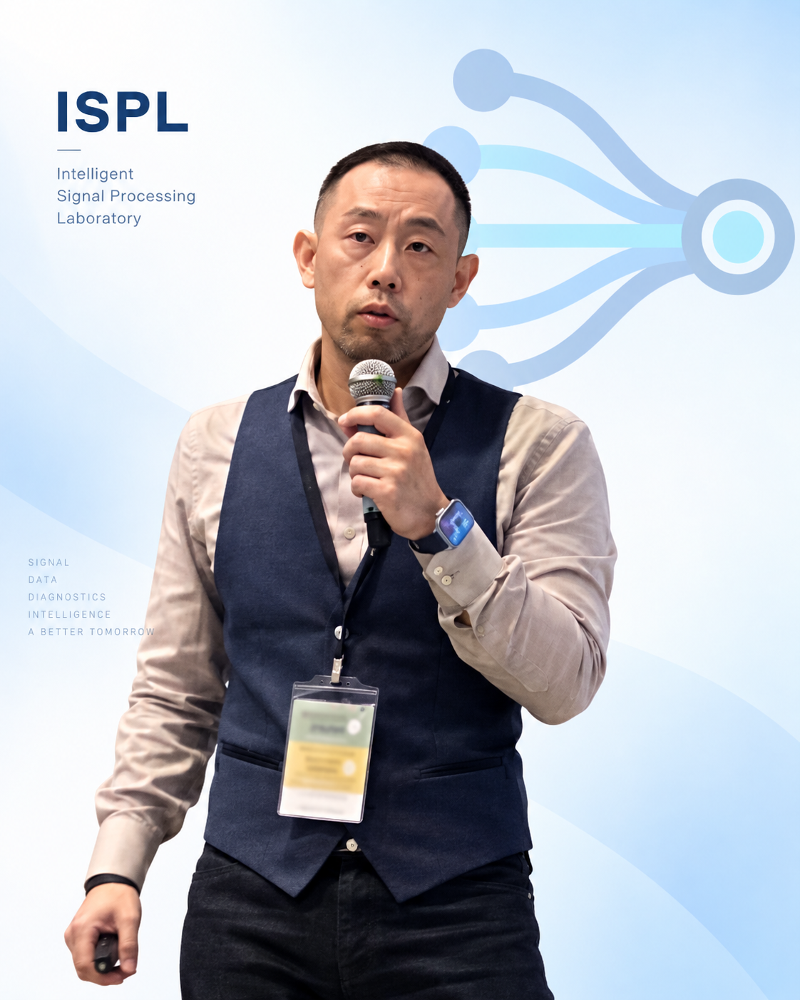

01
進行中
物理導向訊號處理
物理導向波束成形於機械故障診斷
整合物理響應特性、多通道感測與強健波束成形，在複雜工況下增強微弱故障相關訊號成分。
We develop intelligent signal processing methods that transform complex multi-sensor measurements into reliable information and actionable intelligence for machinery diagnostics, intelligent monitoring, and predictive maintenance.
我們結合訊號處理、物理導向方法與人工智慧，發展可應用於實際機械監測、故障診斷與預知維護的智慧方法。
整合物理響應特性、多通道感測與強健波束成形，在複雜工況下增強微弱故障相關訊號成分。
發展多通道融合與空間濾波策略，提升故障特徵可辨識度與智慧診斷可靠度。
結合振動、電流與多感測器資訊，研究諧波減速機與精密傳動系統之智慧狀態監測與故障診斷。
我們結合訊號處理、智慧診斷、感測技術與人工智慧，探索真實工程問題中的訊號與智慧。

研究領域涵蓋智慧訊號處理、機械故障診斷、多通道感測、物理導向訊號處理、人工智慧，以及預知與健康管理。
常駐研究成員自加入 ISPL 起持續參與實驗室研究至畢業，投入實驗室研究計畫、國科會計畫與大專學生研究計畫等研究工作。
專題研究以實際工程問題為核心，結合訊號處理、人工智慧、嵌入式系統、網路技術與相關領域進行研究與實作。
Our research integrates signal processing, multi-sensor sensing, physics-guided methods, and artificial intelligence for intelligent machinery monitoring and predictive maintenance.
Advanced signal analysis and feature extraction for complex, non-stationary, and noise-contaminated engineering signals.
Multichannel vibration, current, and heterogeneous sensing for reliable information extraction and condition monitoring.
Physics-guided steering and spatial filtering methods for enhancing weak fault-related components in rotating machinery.
Intelligent fault diagnosis and prognostics for rotating machinery, harmonic drives, and precision transmission systems.
We connect sensing, signal processing, physical knowledge, and artificial intelligence to understand complex engineering systems.
提供訊號處理與智慧診斷研究相關的程式碼、資料集、模型與研究工具，逐步建立可重現與可延伸的研究資源。
提供訊號處理、波束成形、故障診斷與智慧狀態監測相關之可重現程式實作。
提供訊號分析、故障診斷與工程教育所使用之精選實驗資料與公開基準資料。
提供研究模型、分析工具與相關資源，支援可重現之智慧訊號處理研究。